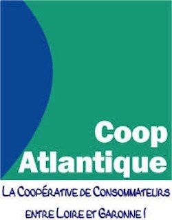
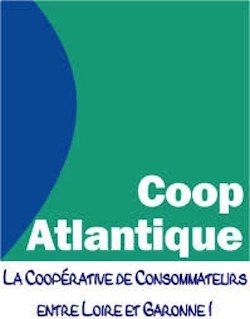

Nos sponsors :


A 6 ans, on a parfois envie de commencer la Gym mais on ne rentre pas tout de suite en compétition si l'on a pas pratiqué la Gym aux agrès avant.
Ou alors on a envie de se faire plaisir en sortant du groupe Baby Gym. A La Patriote, c'est possible !
Les objectifs de l'école de gym sont les suivants :
| Access Gym 1 GAF (6-8 ans) | Mardi de 18H00 à 19H15 | ghljnhlqsketrnh:qlswkjhl:kqdwfjhl:iwdqhjolmiwsdr de 13H45 à 15H00 |
| Access Gym 2 GAF (9-12 ans) | Mercredi de 15H00 à 16H30 | Jeudi de 18H00 à 19H30 |
| Access Gym 3 GAF | Mercredi de 15H00 à 16H30 | |
| École de GYM Loisir ADOS GAF (12-15 ans) | Lundi de 18H00 à 20H00 | |
| Access Gym GAM Benjamins-Minimes (9-12 ans) | Mercredi de 15H00 à 16H30 | |
| Access Gym GAM Poussins | Jeudi de 18H00 à 19H30 |
Nos sponsors :
